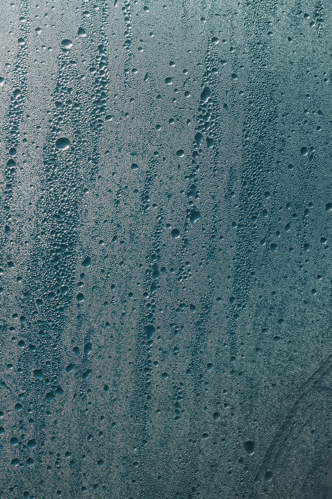
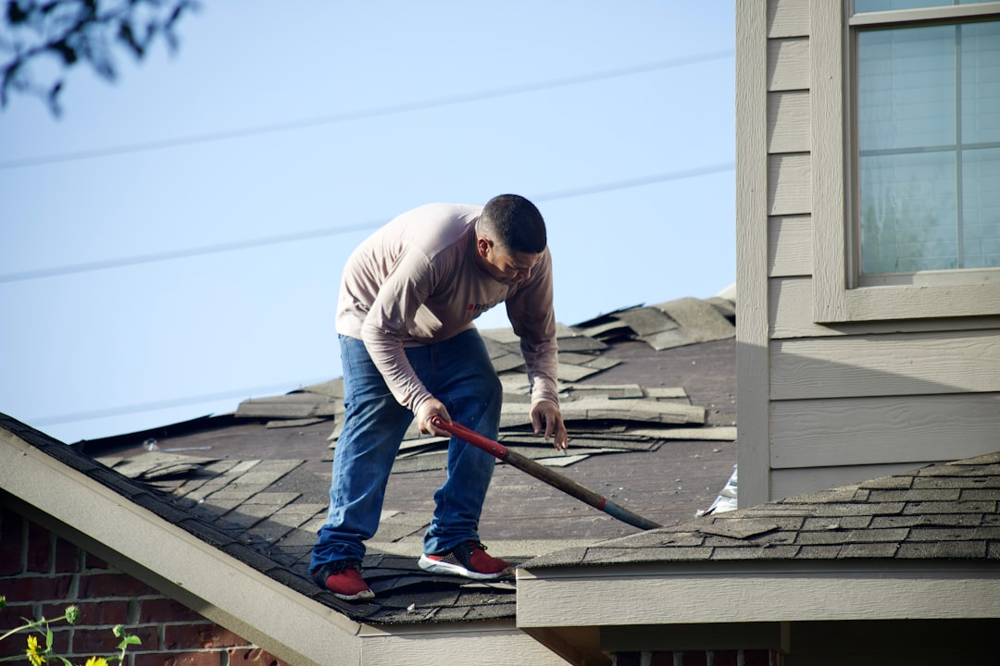
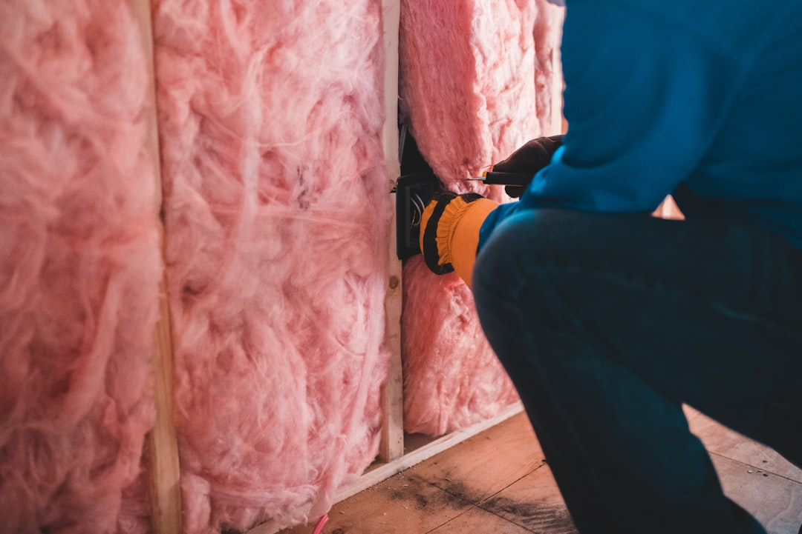
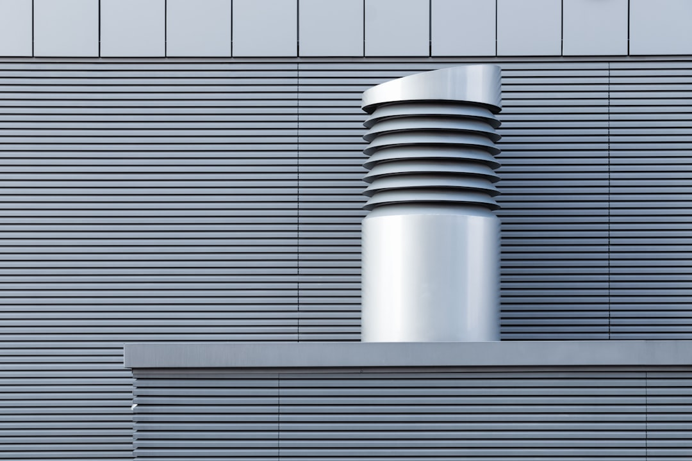

Home Energy & Indoor Air
Straight answers on how insulation, ventilation, and solar upgrades actually change the air you breathe indoors, written from years spent diagnosing homes rather than selling them.
Start Here
Defines the terms that come up most — ACH, ERV, HRV, MERV, blower door test, VOC — so you're not hunting for definitions elsewhere.
Maps common symptoms — headaches, a cough that won't quit, eye irritation — to the home-air causes behind them before you call anyone.
The red flags — musty smell, window condensation, high indoor humidity — that say a home was sealed or insulated poorly.
How to spot a vague or misleading eco claim on a material or product before you pay extra for it.

Why This Site Exists
I spent years as a certified building performance auditor, going house to house with a blower door and a meter, telling people which upgrades were worth the money and which ones would quietly work against them.
What got me writing this down was closer to home. A family member's breathing got noticeably better after we retrofitted our own place, and that was the first time the connection between energy upgrades and air quality stopped being a professional talking point and started being personal.
I still live in that house. It's older, solar-retrofitted, and nowhere close to perfect, which is honestly the point. Most of what I write here comes out of balancing modern energy upgrades against a structure that was never built for them, not out of a lab or a showroom.
I'm skeptical by default of anything marketed as “eco” without proof behind it, and I'd rather tell you a retrofit went sideways than pretend every project here wrapped up clean. That's what this site is: practical, evidence-first notes on making a home more efficient without making it worse to live in.


“I spent years standing in other people’s basements with a blower door and a clipboard, telling homeowners which tight little upgrades to feel good about and which ones might quietly work against them. Then I did the same upgrades to my own place.”Read the full story →